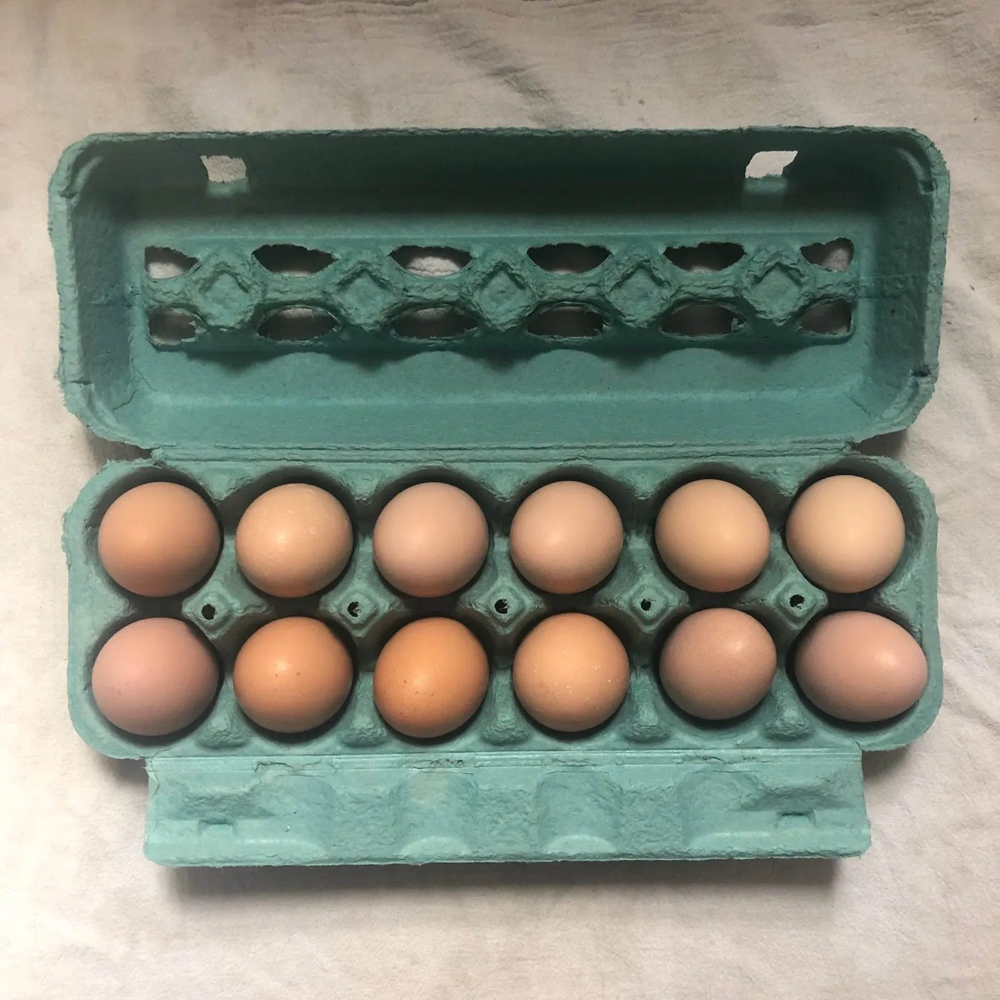
Pastured Eggs
Beautiful brown (and sometimes green and blue!) eggs from hardy American breeds, raised on pasture and supplemented with locally grown, non-GMO feed. Available seasonally in our farm store.
Family farm in Westminster, Maryland
That’s why we’re growing everything we like to eat here on our farm. We grow vegetables and raise meat and eggs in our regenerative system on nearly 20 acres in Westminster.
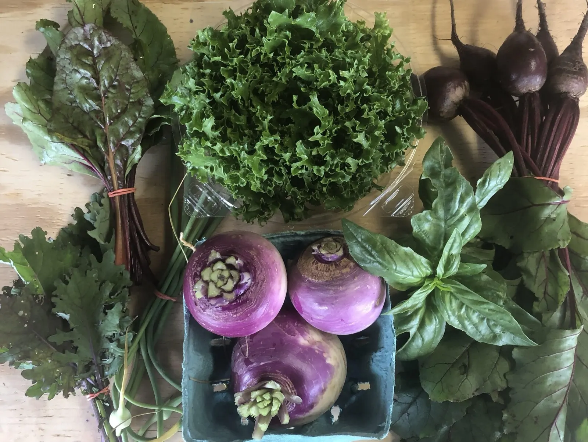
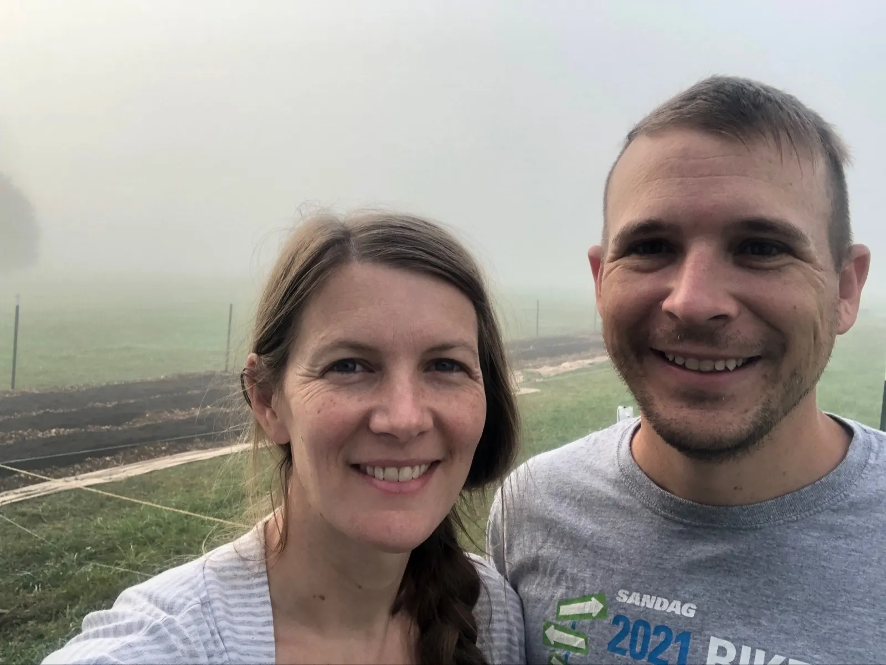
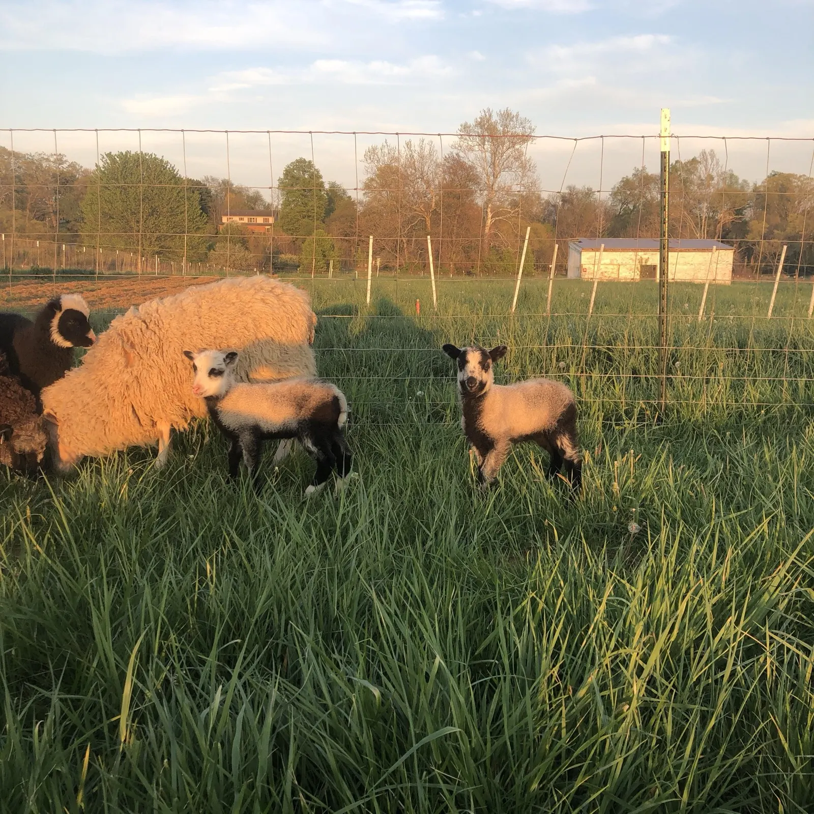
Out on pastureWe live on the farm full-time with our family, and we think it’s just about the best place on earth for our kids to grow up.
We offer CSA memberships and also sell our food in our on-farm store. We hope to grow food you love on a farm you love to visit. We look forward to seeing you soon and sharing our food with you!
The food we grow reflects the values we share with our kids: we honor the essence of everything we grow, plants and animals, and we never spray herbicides or any other “-cide.”
On our farm you can expect lots of seasonal variety. Buy “a la carte” produce, eggs, cuts of meat, flowers, and more. When you visit, you can look forward to:
And much more! We update our social media often with the availability of pasture raised beef, lamb, pork, and chicken.
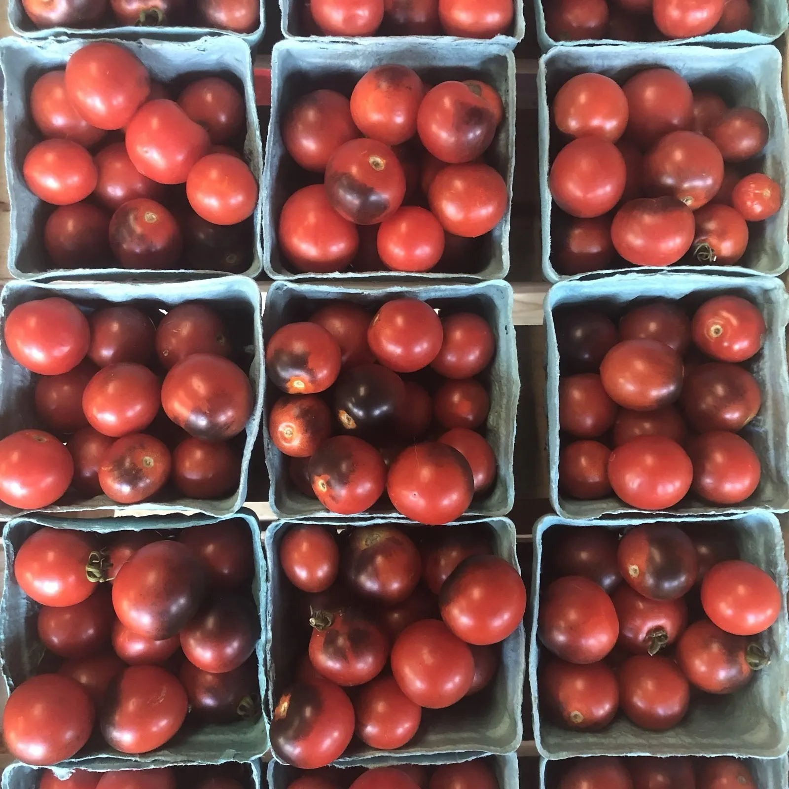
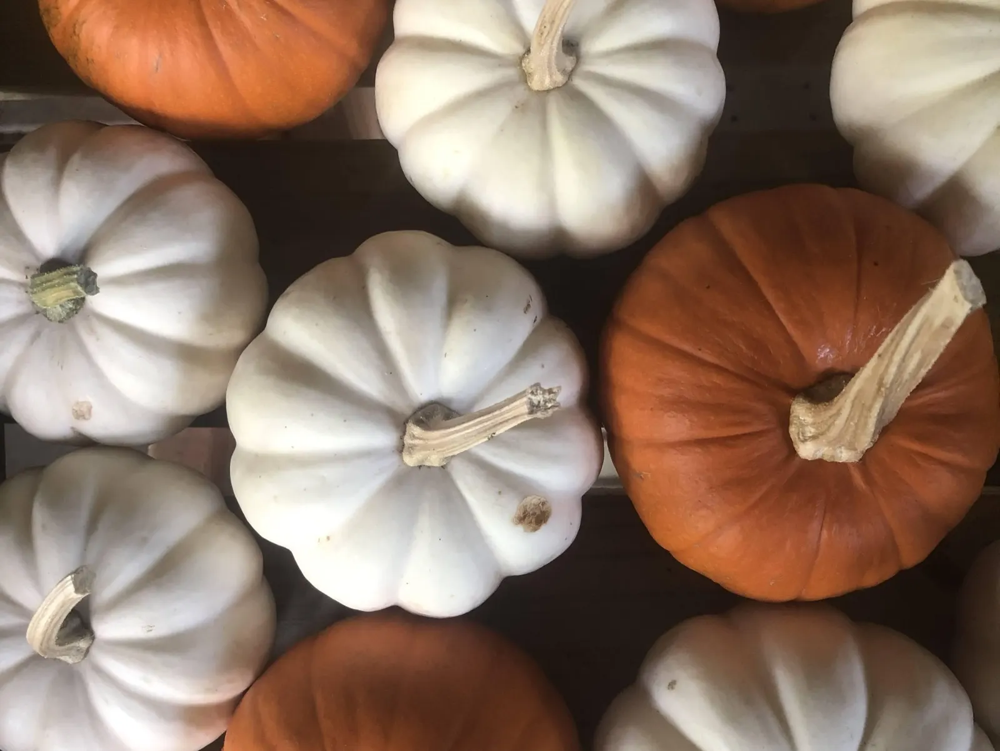
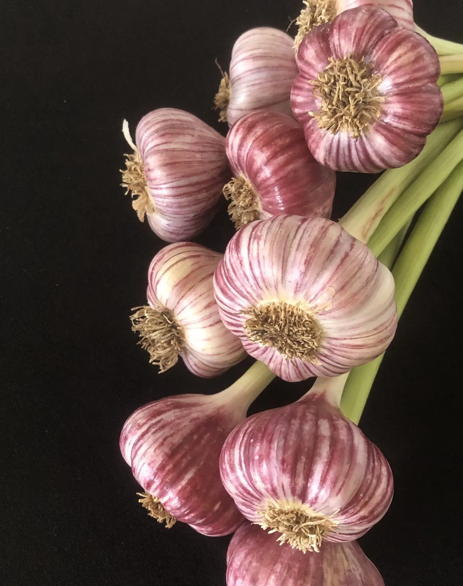
Our beef cattle are raised on grass on our farm. They spend their days grazing and socializing; in summer you can often catch a look at them driving along Lemmon Rd.
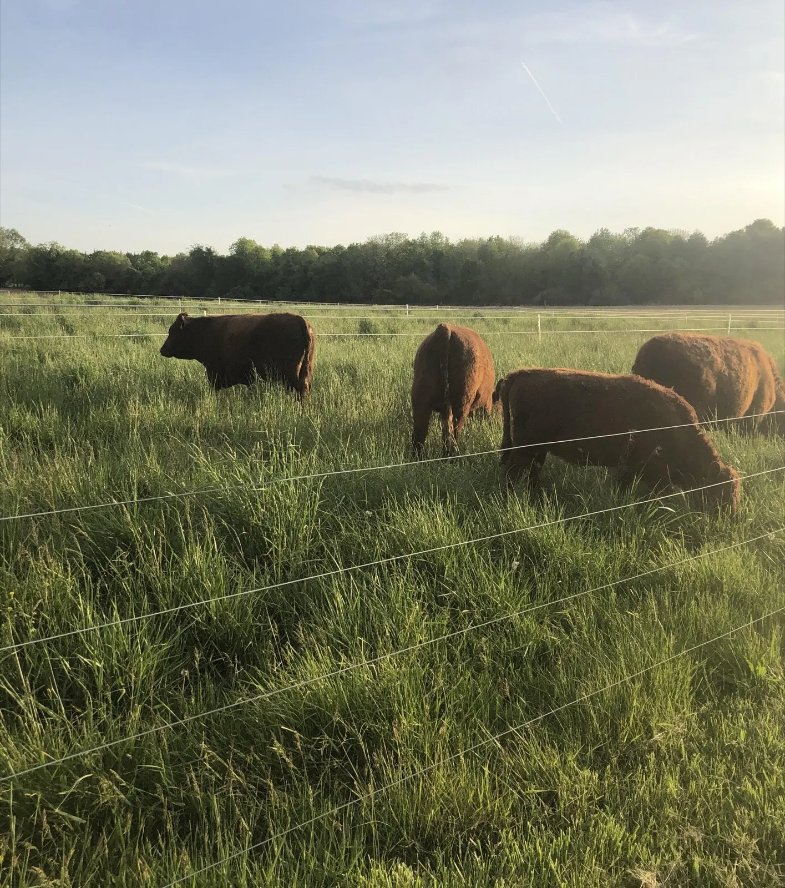

Beautiful brown (and sometimes green and blue!) eggs from hardy American breeds, raised on pasture and supplemented with locally grown, non-GMO feed. Available seasonally in our farm store.
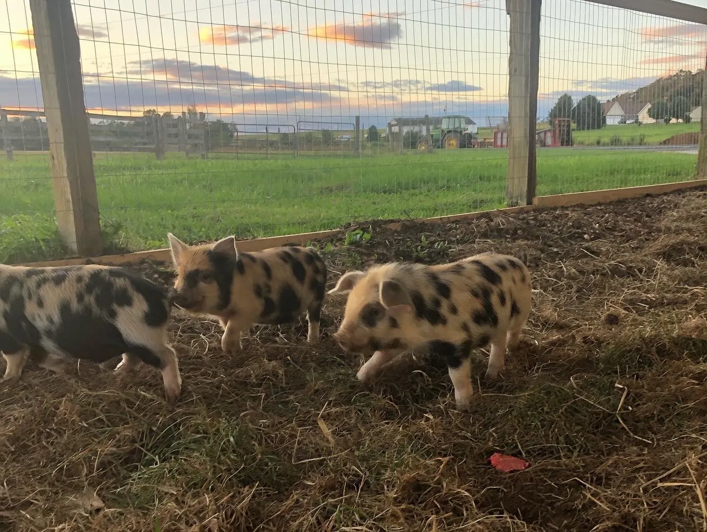
A cross between Idaho Pasture Pigs and Kunekune. Most of their diet is fresh pasture forage and farm leftovers, with a little non-GMO, locally grown feed.
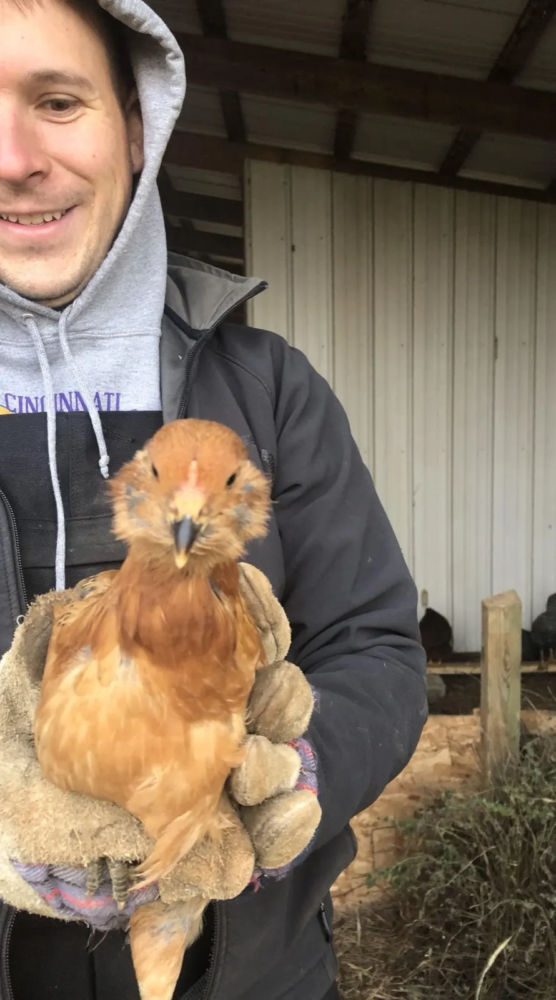
Grown on pasture and non-GMO feed, kept healthy through daily moves to fresh grass. In spring, summer and fall, we strive to have fresh, never frozen chicken in the farm store.
Our Regenerative Pledge. In our farming practices we aim to:
We would love to show you where your food is raised. E-mail us to schedule a free farm tour: seasonal ecological exploration, our production areas, our animals, and a little of the history of our farm. Families and children welcome, perfect for a homeschool outing!
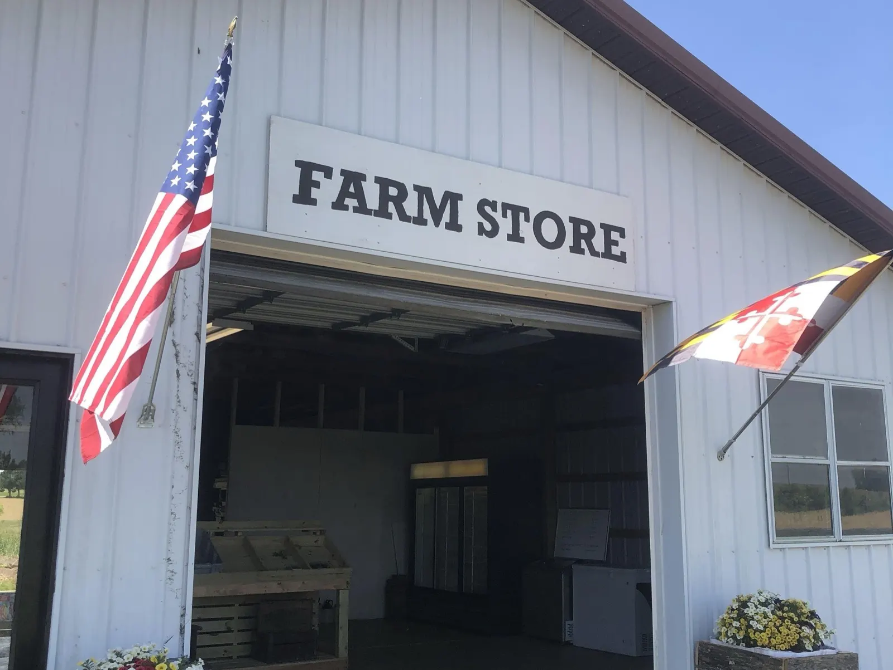
Proposal by Nicolas Masset for Captain Family Farms